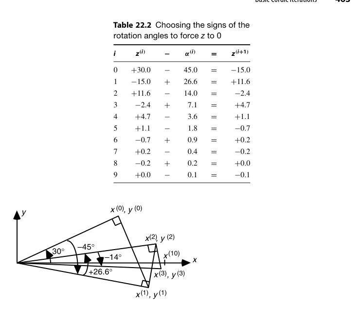
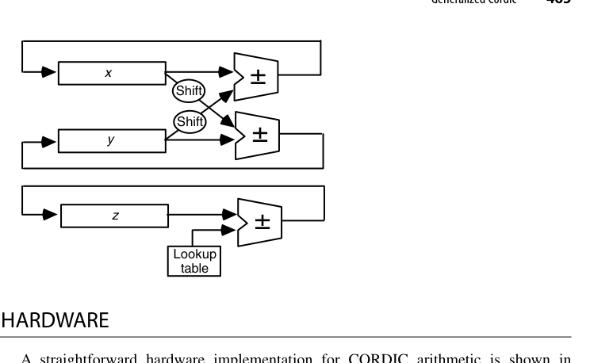
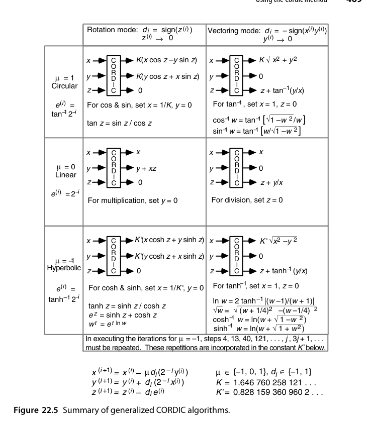
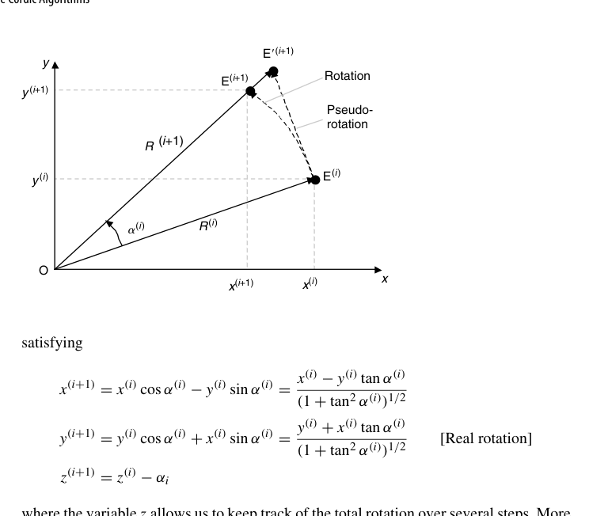
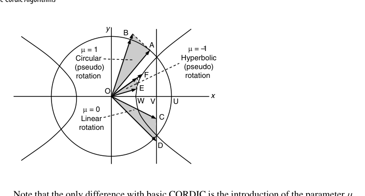

第22章 CORDIC 算法（The CORDIC Algorithms）
本章导读
CORDIC（COordinate Rotation DIgital Computer）(Volder 1959年) 是硬件算法设计的一颗明珠：只用移位和加法，通过一系列预定义角度的”伪旋转”，算出 sin、cos、arctan、sinh、cosh、ln、exp，甚至乘除法——一台没有乘法器的计算器（HP-35，1972）因此能算超越函数。它的”迭代 + 查小表 + 每拍一次移位加”骨架，与除法/开方一脉相承，是函数求值硬件化的第三条路线（前两条：多项式逼近、大查找表）。
22.1 旋转与伪旋转（Rotations and Pseudorotations)
平面旋转 \((x, y)\) 转角度 \(\theta\)：
\[ x' = x\cos\theta - y\sin\theta, \qquad y' = x\sin\theta + y\cos\theta \]
提出 \(\cos\theta\) 因子并选特殊角度 \(\theta_i = \arctan(2^{-i})\)（使 \(\tan\theta_i = 2^{-i}\)，乘法变移位）：
\[ x_{i+1} = K_i \left( x_i - d_i \cdot 2^{-i} y_i \right), \qquad y_{i+1} = K_i \left( y_i + d_i \cdot 2^{-i} x_i \right) \]
其中 \(d_i = \pm 1\) 为旋转方向，\(K_i = \cos(\arctan 2^{-i}) = 1/\sqrt{1 + 2^{-2i}}\) 是伪旋转引入的尺度因子。关键洞察：\(\prod K_i\) 是常数（迭代次数固定时），可预先算好一次性补偿——每拍只剩移位、加/减、方向决策！
补全推导。真实旋转不改变向量长度，而”提出 \(\cos\) 因子”的伪旋转（pseudorotation）会把长度放大
\[ R^{(i+1)} = R^{(i)}\left(1 + \tan^2\alpha^{(i)}\right)^{1/2} = \frac{R^{(i)}}{\cos\alpha^{(i)}} \]
伪旋转方程因此就是真实旋转方程整体乘上了这个放大因子。\(m\) 步累积下来，坐标被放大了
\[ K = \prod_{i} \left(1 + \tan^2\alpha^{(i)}\right)^{1/2} \]
关键在于：只要每步使用的角度集合固定（正负号任意），\(K\) 就与旋转目标无关、可预先算好。这是整个方法成立的基石——系统性误差一次性预补偿，逐拍不产生新误差。反之，若角度集合随输入变化，\(K\) 就不再是常数，补偿的代价会吞掉伪旋转省下的硬件。
22.2 基本 CORDIC 迭代（Basic CORDIC Iterations)
三种工作模式的统一形式（\(m \in \{1, 0, -1\}\) 对应圆/线/双曲坐标系）：
\[ x_{i+1} = x_i - m\, d_i\, 2^{-i} y_i, \quad y_{i+1} = y_i + d_i\, 2^{-i} x_i, \quad z_{i+1} = z_i - d_i\, e_i \]
\(e_i\) 是查表得到的角度常数（\(\arctan 2^{-i}\) 或 \(\text{artanh}\, 2^{-i}\)）。两种使用方式：
- 旋转模式（rotation）：驱动 \(z \to 0\)，把向量转到目标角度——得 \(\sin/\cos\)（令初始 \(x = 1/K, y = 0\)）、复数旋转、极坐标转换；
- 向量模式（vectoring）：驱动 \(y \to 0\)，把向量转到 x 轴——得 \(\arctan(y/x)\)（\(z\) 累出角度）、向量模（\(x\) 得 \(|v| \cdot K\)）、直角转极坐标。
展开两点工程细节。其一，每步迭代 = 2 次移位 + 1 次查表 + 3 次加减，角度常数 \(e^{(i)} = \arctan 2^{-i}\) 预存小表（\(i = 0,1,2,3,\dots\) 依次约为 \(45.0°, 26.6°, 14.0°, 7.1°, 3.6°,\dots\)，每角约为前一角的一半）。其二，方向决策 \(d_i = \mathrm{sign}(z^{(i)})\)（旋转模式）与不恢复除法”试减失败改加法”如出一辙：\(z\) 过冲就往回转、欠着就继续转。
旋转模式跑完 \(m\) 步、\(z^{(m)} \to 0\) 时：
\[ x^{(m)} = K(x\cos z - y\sin z), \qquad y^{(m)} = K(y\cos z + x\sin z) \]
\(K = 1.646\,760\,258\,121\cdots\)。求 \(\sin z\) 与 \(\cos z\) 只需令 \(x = 1/K = 0.607\,252\,935\cdots\)、\(y = 0\) 起步，把尺度因子在入口处消化掉。\(k\) 位精度需要 \(k\) 次迭代：大 \(i\) 时 \(\arctan 2^{-i} \approx 2^{-i}\)，超过 \(k\) 步的旋转对结果的贡献小于 ulp。
收敛域由角度表的完备性决定：圆周模式下为 \(-99.7° \le z \le 99.7°\)（全部角度之和），恰好覆盖 \([-\pi/2, \pi/2]\)。收敛的充要条件是每个角度不小于其后所有角度之和的一半——\(\arctan 2^{-(i+1)} \ge \frac{1}{2}\arctan 2^{-i}\) 成立；后文会看到双曲模式恰恰在这里翻车。
换 \(m\) 与模式组合：\(m=-1\) 双曲模式得 sinh/cosh/artanh，进而 \(\ln x = 2\,\text{artanh}\left(\frac{x-1}{x+1}\right)\)、\(e^x = \sinh x + \cosh x\)；\(m=0\) 线性模式退化为乘法（旋转）与除法（向量）——CORDIC 是一台”算法万花筒”。

以度为单位跟踪 \(z^{(i)}\)（目标：驱动 \(z \to 0\)，每步选 \(d_i = \mathrm{sign}(z^{(i)})\)）：
\[ +30.0 \xrightarrow{-45.0} -15.0 \xrightarrow{+26.6} +11.6 \xrightarrow{-14.0} -2.4 \xrightarrow{+7.1} +4.7 \xrightarrow{-3.6} +1.1 \xrightarrow{-1.8} -0.7 \xrightarrow{+0.9} +0.2 \xrightarrow{-0.4} -0.2 \xrightarrow{+0.2} +0.0 \xrightarrow{-0.1} -0.1 \]
10 步后 \(z\) 已压到 \(0.1°\) 量级（本例用近似角度值便于心算，实际硬件用弧度全精度表）；向量 \((x, y)\) 沿图 22.2 的折线从初始方向逼近 \(+30°\) 方向。整个决策序列与不恢复除法的商数字序列在结构上完全同构。
向量模式（vectoring）把决策对象换成 \(y\)：\(d_i = -\mathrm{sign}(x^{(i)}y^{(i)})\) 驱动 \(y \to 0\)，\(m\) 步后
\[ x^{(m)} = K\sqrt{x^2 + y^2}, \qquad z^{(m)} = z + \arctan\frac{y}{x} \]
令 \(x = 1, z = 0\) 起步即得 \(\arctan y\)，\(x\) 累出的是向量模。配合恒等式 \(\arctan(1/y) = \pi/2 - \arctan y\) 可把定点运算的范围压半。注意：旋转模式有收敛域问题，向量模式对任意输入都收敛——22.5 节选型时这是个重要区别。
22.3 CORDIC 硬件（CORDIC Hardware)
最简实现：三个寄存器（\(x, y, z\)）+ 两个桶形移位器（或时序复用一个）+ 三个加减法器 + 角度 ROM + 符号决策逻辑。每拍一次迭代，\(k\) 位精度约 \(k\) 拍。
提速方向：
- 展开流水：\(k\) 级全流水，每级固定移位量（移位变硬连线，桶形移位器消失！）——吞吐每拍一个结果，这是 FPGA 上 CORDIC 的标准形态（28 章）；
- 高基数/冗余 CORDIC：方向集合扩到 \(\{-1, 0, +1\}\) 或更高基数，减少迭代次数，代价是选择逻辑变复杂（与 SRT 的历史重演）。
成本阶梯从简到繁，可以排成一张选型单：
- 最简时序版：3 个寄存器 + 角度查表 ROM + 2 个移位器 + 3 个加减法器；\(d_i\) 通过”选原码还是补码”进入加减法器。面积再省可让 3 路计算分时共享一个加减法器（慢约 3 倍）；
- 固件/软件版：直接在通用处理器的 ALU 上跑迭代循环，角度表放控制 ROM 或内存——早期科学计算器（如 HP-35）正是这么干的；
- 位串行版：加减法器位串行化，\(k\) 位精度约 \(O(k^2)\) 拍——对手持计算器完全够用（几万拍不过几十毫秒，人眼无感）；
- 全展开流水版：\(k\) 级流水、每级移位量固定，桶形移位器退化为硬连线，吞吐每拍一个结果——FPGA 函数计算的标准形态（28 章）。

22.4 广义 CORDIC（Generalized CORDIC)
把”旋转矩阵”抽象为更一般的迭代映射，可以覆盖更多函数（对数、指数、开方的统一推导）。价值在于提供统一的收敛性分析框架：什么条件下迭代收敛、收敛域多大、需要几次补偿迭代。
三种坐标系的差异全在 \(e^{(i)}\) 与尺度因子上：
| \(\mu\) | 坐标系 | \(e^{(i)}\) | 尺度因子 | 向量”长度” |
|---|---|---|---|---|
| 1 | 圆 | \(\arctan 2^{-i}\) | \(K = 1.6468\)（放大） | \(\sqrt{x^2+y^2}\) |
| 0 | 线 | \(2^{-i}\) | 1（真旋转） | \(x\) |
| \(-1\) | 双曲 | \(\text{artanh}\, 2^{-i}\) | \(K' = 0.8282\)（缩小） | \(\sqrt{x^2-y^2}\) |
线性模式是”伪旋转全变真旋转”的退化情形：旋转模式（\(y\) 起步为 0）直接算乘法/乘加 \(y + xz\)；向量模式（\(z\) 起步为 0）直接算除法/除加 \(z + y/x\)。双曲模式下伪旋转使向量长度收缩（\(\cosh\alpha > 1\)），累积收缩因子 \(K' = 0.828\,159\,360\,960\,2\cdots\)。
双曲模式的收敛有个著名的坑：\(\arctan\) 满足”每个角度 ≥ 后续角度之和的一半”，\(\text{artanh}\) 却不满足。修补方法简单粗暴——下标 \(i = 4, 13, 40, 121, \dots\)（即 \(3j+1\) 序列）的迭代执行两遍，角度序列重新完备；实际精度需求下 \(m < 121\)，重复代价可忽略（已折算进 \(K'\)）。修好之后：\(\sinh/\cosh\) 的收敛域 \(|z| < 1.13\)，\(\text{artanh}\) 的收敛域 \(|y| < 0.81\)，配合域归约恒等式足以覆盖全值域。
22.5 CORDIC 方法的应用（Using the CORDIC Method)
- 收敛域扩展：输入超出收敛范围时先做域归约（range reduction）——三角函数用周期性/对称性归到 \([0, \pi/4]\)，对数用 \(x = m \cdot 2^e\) 拆成 \(\ln m + e \ln 2\)；
- 尺度因子补偿：\(\prod K_i\) 预乘到初始值，或在最终乘法中吸收；
- 典型应用：DDS（直接数字频率合成）的相位→正弦转换、QR 分解/Givens 旋转（向量模式的硬件实现）、机器人运动学、软件无线电的数字上下变频。
除直接函数外，“一次预处理 + 一次向量模式”还能拿下一批复合函数：\(\ln w = 2\,\text{artanh}\frac{w-1}{w+1}\)（两次加法预备）、\(\sqrt{w} = \sqrt{(w+\frac{1}{4})^2 - (w-\frac{1}{4})^2}\)（双曲向量模式算 \(\sqrt{x^2-y^2}\)）、\(\sin^{-1} w = \arctan\frac{w}{\sqrt{1-w^2}}\)、\(e^z = \sinh z + \cosh z\) 等。下表是全书最实用的”坐标系 × 模式 × 初始化 → 函数”对照图之一。

两个工程细节值得展开：
- 迭代次数必须固定。为了让 \(K\)（与 \(K'\)）保持常数，即使 \(z\)（或 \(y\)）中途已到 0 也不能提前收工——线性模式除外。想提前停止或跳步，就必须逐拍维护 \((K^{(i)})^2 \leftarrow (K^{(i)})^2(1 \pm 2^{-2i})\) 并在结尾做开方/除法修正——变因子 CORDIC 的额外开销通常得不偿失。
- 截断 CORDIC（truncated CORDIC）免费省一半：前 \(k/2\) 步照常迭代；对小角度有 \(\arctan\varepsilon \approx \varepsilon\)，剩余 \(k/2\) 步可合并成一次乘法（如 \(x^{(k/2+1)} = x^{(k/2)} - y^{(k/2)}z^{(k/2)}\)），\(z\) 一步清零。可证被丢弃的角度对 \(K\) 的贡献小于 ulp——尺度因子一个字都不用改。此外，高 radix 版本（\(d_i \in \{-2,-1,1,2\}\)，移位器后加 2 选 1 多路器）把迭代数再砍半，与 SRT 的高 radix 化完全同构。
22.6 代数表述（An Algebraic Formulation)
用复数乘法的语言：CORDIC 旋转 = 乘以 \((1 + j\, d_i 2^{-i})\)，整个迭代 = 复数连乘。这个视角把 CORDIC 与 FFT 的旋转因子、复数乘法器设计联系起来，也给出收敛性（角度级数的完备性：\(\sum \arctan 2^{-i}\) 能逼近范围内任意角）的严格证明路径。
完整的代数推导其实不长。从乘性归一化迭代 \(u^{(i+1)} = u^{(i)} - \ln c^{(i)}\)、\(v^{(i+1)} = v^{(i)}c^{(i)}\) 出发（\(u \to 0\) 时 \(v \to v\,e^{u(0)}\)，23.3 节证明），取
\[ c^{(i)} = \frac{1 + j\,d_i 2^{-i}}{\sqrt{1 + 2^{-2i}}} = e^{j g^{(i)}}, \qquad g^{(i)} = \arctan(d_i 2^{-i}) \]
则 \(u\) 中被消去的是纯虚数 \(j\arctan(d_i 2^{-i})\)，与 CORDIC 的角度累减逐字对应。令 \(u^{(0)} = jz\)、\(v^{(0)} = 1\)，复数乘法 \(v^{(i+1)} = v^{(i)}(1 + j d_i 2^{-i})\) 按实虚部展开正是圆周 CORDIC 的两条坐标递推；分母 \(\sqrt{1+2^{-2i}}\) 的连乘累积出尺度因子 \(K\)，取 \(v^{(0)} = 1/K\) 即完成预补偿。复数视角还顺手把收敛性说清：角度表 \(\{\arctan 2^{-i}\}\) 的完备性（每角 ≥ 后续和的一半）等价于二进制选择能覆盖 \([-99.7°, 99.7°]\) 中的每个角。
RTL 实践：rtl/ch22_2_cordic_rotation
12 级迭代 CORDIC（旋转模式），定点 Q2.14 格式，输入角度输出 sin/cos：
wire dir = (z >= 0); // 旋转方向由剩余角度符号决定
wire signed [15:0] x_next = dir ? x - (y >>> i) : x + (y >>> i);
wire signed [15:0] y_next = dir ? y + (x >>> i) : y - (x >>> i);
wire signed [15:0] z_next = dir ? z - atan_tab[i] : z + atan_tab[i];设计要点：
- 无乘法器：每拍只有移位（
>>>算术右移）与加减——CORDIC 的全部本钱； - 增益预偿：初始 \(x = K \cdot 2^{14}\)（\(K \approx 0.6073\)），把 12 级旋转的尺度因子一次性预付，输出直接就是真值比例；
- 角度表：\(\arctan(2^{-i})\) 常数表是唯一的”存储”，12 项足够 Q2.14 精度（末项 \(\approx 2^{-11}\)）；
- testbench 对 \(0\)、\(\pm\pi/4\)、\(\pm 0.5\)、\(1.0\) 等角度做定向校验，容差 \(\pm 150\)（约 0.009 rad），实测误差仅几个 LSB。
cd rtl/ch22_2_cordic_rotation
bash run_iverilog.sh # 或 bash run_verilator.sh本章小结
- CORDIC = 移位 + 加 + 小角度表，算尽常见超越函数。
- 伪旋转的尺度因子是常数，可集中补偿；每拍只做方向决策与移位加。
- 旋转/向量两模式 × 圆/线/双曲三坐标系 = 函数全家桶。
- 全流水展开后移位器消失，FPGA 上是函数求值的常客。
原书插图

